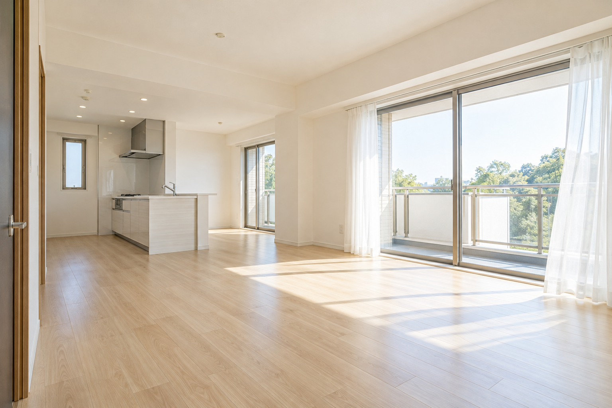

空室クリーニング
退去後のお部屋を、次の入居に向けて。水まわりから窓・床まで、室内全体の清掃をご相談いただけます。

空室のイメージ図管理会社さま・賃貸オーナーさまへ
退去後の空室清掃から、原状回復のご相談まで。
お部屋を整え、次の入居への一歩をお手伝いします。
A FRESH START
退去後のお部屋をきれいに整え、
次の入居者さまを迎える準備をお手伝いします。
管理会社さま・オーナーさまのご希望を伺い、
物件の状態に合わせた清掃・原状回復をご相談いただけます。
01 / SERVICE
清掃したい箇所や補修のご希望をお聞かせください。
物件の状態に合わせて、作業内容を確認します。
退去後のお部屋を、次の入居に向けて。水まわりから窓・床まで、室内全体の清掃をご相談いただけます。
キッチンや浴室、トイレなど、汚れが気になる箇所に。素材や設備の状態を確認して、清掃範囲をご案内します。
壁や床など、清掃だけでは整わない箇所も。補修・張替え等のご要望を伺い、対応できる内容を確認します。
※作業内容・施工範囲・料金は、物件の広さや状態、ご希望を確認したうえでご案内します。
02 / BEFORE & AFTER
KITCHEN CLEANING
水アカやくすみが気になるシンクも、
清潔感のある印象へ。
実際の施工事例・仕上がりを示すものではありません。実際の施工写真は準備ができ次第、掲載します。
ROOM CLEANING
床の汚れや窓まわりを整え、
次の入居を迎える、すっきりした空間へ。
実際の施工事例・仕上がりを示すものではありません。汚れや素材の状態によって仕上がりは異なります。
BATHROOM CLEANING
水アカや石けんカスが気になる浴室を、
清潔感のある水まわりへ。
実際の施工事例・仕上がりを示すものではありません。汚れや素材の状態によって仕上がりは異なります。
※地域・作業内容・日程によって対応可否を確認します。
04 / FLOW
ご相談から作業完了まで。
まずは物件の状況をお聞かせください。
メールまたは携帯電話へ。
所在地・間取り・ご希望日をお知らせください。
写真や現地の状況を確認し、作業内容・金額・日程をご案内します。
ご確認いただいた内容に沿って、お部屋の清掃・施工を進めます。
作業箇所と仕上がりを確認し、お引渡しします。
05 / FAQ
物件の所在地、間取り・面積、ご希望の作業内容と日程をお知らせください。気になる箇所の写真があると、状況を確認しやすくなります。
まとめてご相談いただけます。必要な作業や補修内容を伺い、対応できる範囲を確認します。
その他関東圏は要相談です。物件の所在地、作業内容、ご希望の日程をお知らせください。確認のうえ、対応可否をご案内します。
間取り・面積、汚れや設備の状態、作業範囲などを確認してお見積りします。現時点では一律料金の掲載はしていません。
CONTACT
空室清掃・原状回復のご相談はこちら。
物件の場所・間取り・ご希望日をご用意いただくとスムーズです。
フォーム・メール・お電話でご相談いただけます。
INQUIRY FORM
分かる範囲でご入力ください。
清掃・原状回復のご相談内容を確認し、
メールまたはお電話でご連絡します。
必須 は入力が必要な項目です。
お電話でのご相談 ↗090-5765-1797
BUSINESS INFORMATION